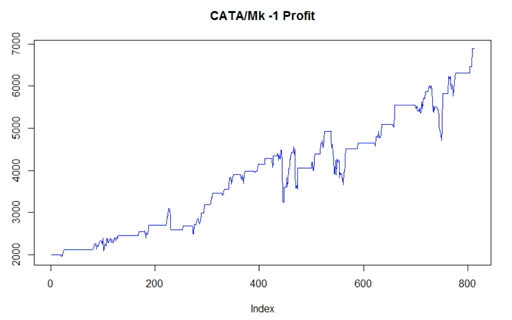

Mathematics | Statistics | Finance
The MIRC was founded as McMaster's first student research team to use the mathematics, statistics and computer science material taken from the undergraduate curriculum. It seeks to perform research in investment strategies and better equip students with the industry skills necessary to work in a quantitative field.
Nik Počuča, is a fourth-year Math and Stats Co-op student with a passion for computational statistics and machine learning algorithms. His primary interests revolve around using neural nets to classify and recognize indicators in large datasets to better improve time series models.
Lucas Krenn is a second-year financial mathematics student at McMaster currently working as an ambassador for The Montreal Exchange. His areas of interest include equities, options, and futures trading, algorithmic trading techniques, research in order types, and HFT. He hopes to one day work on the buy-side.
Sadisha Galappatti is a fourth year software engineering student with an interest drive for devops engineering and full stack development on mobile and web. He has an interest for the application of software systems to finance.
In January of 2017, the MIRC had come across changepoint analysis which is a method for detecting changes in time series models. The CATA/Mk-1 uses simple buy low, sell high trading strategy but with a twist. The changepoint method tracks which state the stock/etf is in. As long as the etf/stock is in the state the algorithim will trade. However if a changepoint is detected then the state has changed and the algorithim will clear the etf/stock off the portfolio. It will resume trading once the new state has been established. The CATA/Mk-1 has a Sharpe ratio of 2.8, and a 380% ROI over 3 years. Future improvements in CATA/Mk-2 will allow it to track and read news articles using a neural net and eliminate any drawdown effects.
